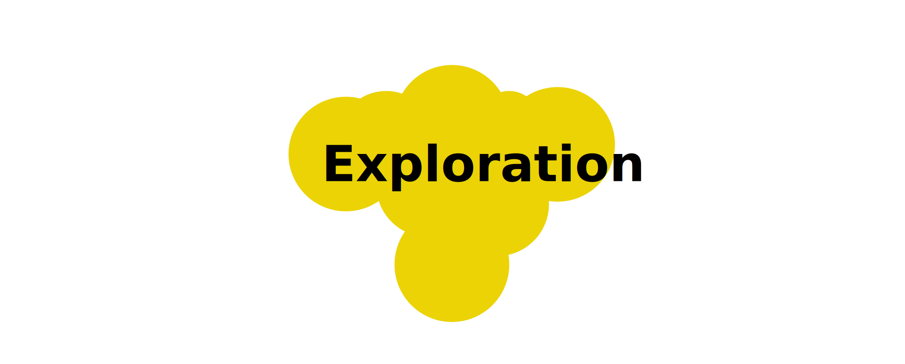
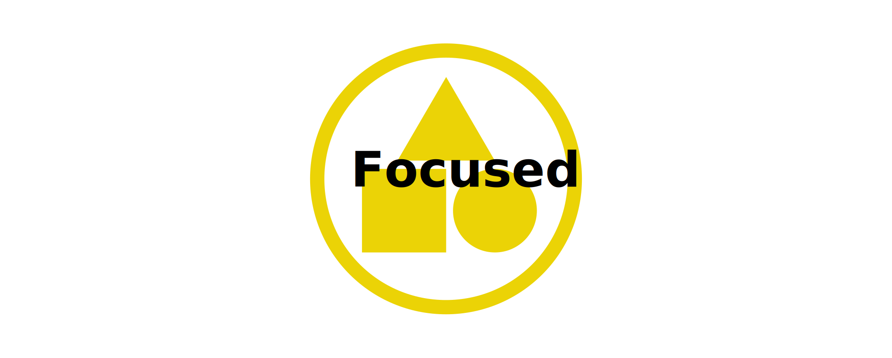
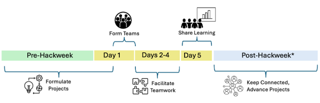

Projects#

During our hackweeks, we invite participants to collaborate in small group project teams (usually 5-7 people). Depending on the size of the hackweek, we usually see between 10-15 project teams form. Embedding project work along with tutorials across the week offers participants multiple ways to deepen their learning around specific data sets, data science methods, and open science practices.
Why do we dedicate so much of the hackweek to project work? We see project-based learning to be an effective tool for iterative, collaborative engagement with hackweek content [1], and a forum for peer-learning [5]. Projects can also be a catalyst for the formation of communities of practice that continue to grow after a hackweek has ended.
Each hackweek’s community of research scientists and domain practitioners generates the project offerings. While the projects are unique from hackweek to hackweek, they typically fall into one of the following categories:
Advancing a part of a research idea or ongoing effort
Deepening tutorial learning with hands-on experience with data sets/tools
Developing a new community tool or library
{kind=link}
Project Design#
On the following pages, you will find more details on how projects are designed. This information is provided to help guide project leaders, but it is also useful for all hackweek participants to be familiar with.
We encourage all project leaders to be creative with their ideas when planning out the project’s group work and learning opportunities. The hackweek organizers will help project leaders think through how to best scope their projects to match their desired outcomes for the group work. In the meantime, project leaders can consider the range of scoping options described in the table below to get a sense of where their ideas may fall.
This table presents examples of what a project scope might look like, what preparation by the project lead is needed, and what teamwork at the hackweek might look like. Most projects will fit somewhere in between these two examples. On the left, the project is less structured so that it can be adapted to where team members would like to take the project based on what they can contribute and want to learn. On the right, the project work is much more structured allowing participants to make quick progress on project goals and/or focused learning experiences. Most projects will fit somewhere in between, a blend of focused and exploration.
 |
 |
|
|---|---|---|
Scope |
- Your team explores a variety of aspects with a new data set, tool, or method |
- Your team works to develop a specific software tool or answer a specific research question |
Preparation |
- Project leaders provide example data, code, and tutorial-like content |
- Project leaders provide well-defined and measurable goals |
Teamwork |
- Team members can pursue their own specific learning goals within the broad project topic |
- Team members work on specific tasks to accomplish project goals |
Project Stages and Timeline#
Each project will progress through these stages:
{kind=link}
Before the hackweek: Formulate Projects#
For many project leaders, planning begins months before the hackweek, shortly after their applications to develop their project idea has been accepted by the hackweek organizers. This time is used to help project leads organize their work into tasks so that team members, with varying backgrounds and skills, can contribute to the project.
This section covers:
Project Leaders Kick-off Meeting
Project Development & Support
Project Facilitation Training
Project Development Milestones
After the hackweek#
We hope that project work will build a foundation for future collaboration, where the work performed during the hackweek event and the connections made with other participants set the stage for new work to emerge.